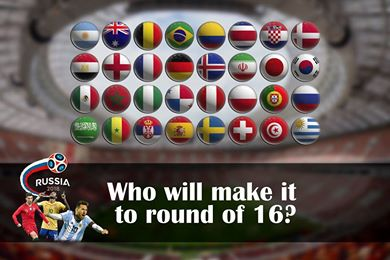

HISTORY
The Daily Star established its place in the media scene of Bangladesh on January 14, 1991.
It started its journey with a sense of challenge and a feeling of humility to serve this nation as a truly independent newspaper.
The newspaper made its debut at a historic time when, with the fall of an autocratic regime,
the country was well set to begin a new era towards establishing a democratic system of government which eluded Bangladesh for too long.
OBJECTIVE
The Daily Star carries on with the long-term responsibility is to strengthen public opinion on how the democratic system should work and how to sustain and nurture democratic norms effectively.
It was a privilege for The Daily Star to be part of a changing scene after the fall of military autocrat in early 1990s. With that privilege came an enormous responsibility of upholding the duties of a free press.
VALUES
The uniqueness of The Daily Star lies in its non-partisan position, in the freedom it enjoys from any influence of political parties or vested groups.
Its strength is in taking position of neutrality in conflicts between good and evil, justice and injustice, right and wrong, regardless of positions held by any group or alliance.
The paper believes to report events objectively, as it is, and without any fear and favour. It is committed to serve the people. That’s why people — whether in power or in opposition — respect The Daily Star.
The Daily Star advocates rule of law, human rights, gender issues, national interests, press freedom, transparency and accountability of people in the administration and in the world of trade and industry on which the newspaper has never compromised whatever the costs. No political powers can take it for granted and no-one is given cause to doubt its fairness.
SOCIAL AND ECONOMIC COMMITMENT
Being well aware of its social responsibilities and duties, the newspaper works to ensure human rights to all, remove gender discrimination, advocate rule of law, press freedom,
transparency and accountability in the administration and in the world of trade and industry and above all to uphold national interests. While working for these ends, The Daily Star always maintains utmost sincerity and accountability to serve the nation the way it is bound by its norms and values.
Besides running news reports on these issues, The Daily Star carries special reports, human-interest stories, features, articles and essays written by its staffs and other professionals and talents from across the country and abroad.
During different national crises, the newspaper played an important role to solve those to stop people’s sufferings. As it remain alert of its social duties, The Daily Star frequently organises roundtables, seminars and discussions on the issues. It also works closely with the civil society for this end.
To promote young talents, The Daily Star organises debates and different competitions at school and college-levels and awards those who show excellence in different fields.


 Front Page
Front Page